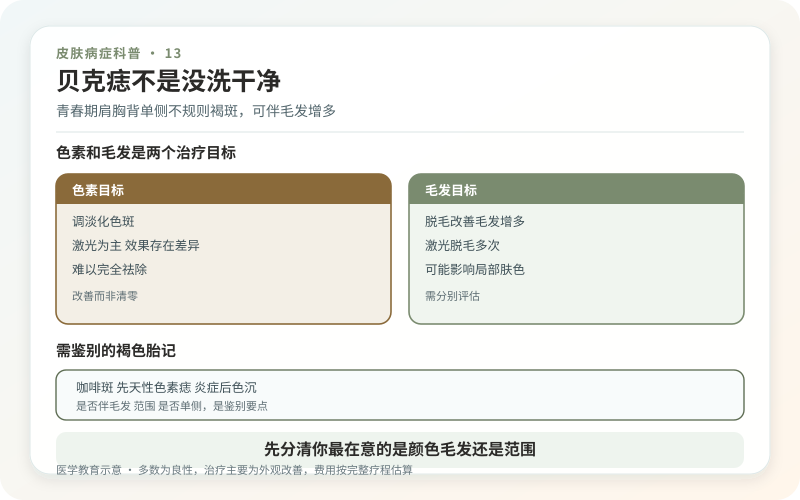
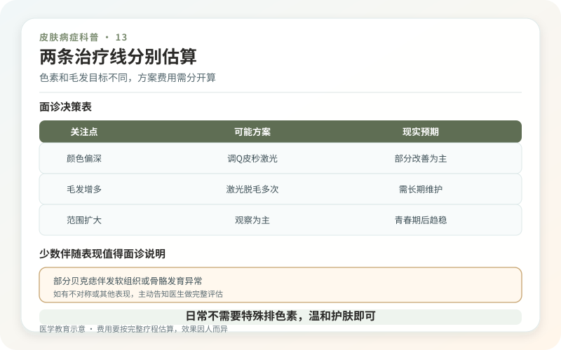

贝克痣常在青春期前后逐渐出现，典型位置是单侧肩部、上胸、肩胛或上臂。早期可能只是一片颜色略深的斑，之后边界扩大、颜色加深，并出现较粗毛发。它虽然叫“痣”，却更接近一种色素和局部组织发育异常，并非污垢、真菌感染或激素没排出去。
男性更常被发现，但女性也会有。多数贝克痣只影响外观，不传染，也不需要治疗。少数人可能合并同侧乳房、胸肌、骨骼或其他软组织发育差异，被称为贝克痣综合征，因此查体不能只盯着颜色。

怎样和其他褐色胎记区分？
咖啡斑常从出生或儿童期存在，颜色更均匀，通常不伴明显毛发；先天性色素痣的表面和细胞性质不同；炎症后色沉有受伤或皮炎史；花斑癣可能有细屑，真菌检查可帮助判断。贝克痣多在青春期出现，呈较大片、不规则、单侧分布，毛发随时间变粗。
医生通常结合病史、查体和皮肤镜诊断，非典型时可能做皮肤活检。若皮损出现新结节、持续溃烂出血、短期异常变化，应复诊排除其他病变，而不是认定“贝克痣在生长”。

需要做全身检查吗？
大多数人不需要复杂筛查。医生会比较两侧胸壁、乳房、肩臂和脊柱外观，询问功能和发育情况；发现明显不对称、肌肉或骨骼异常时，再转诊进一步评估。没有伴随体征时，单纯贝克痣通常不影响身体健康。
在女性，单侧乳房发育差异可能带来实际心理困扰，应被认真讨论，但不能自动归因于贝克痣，也不应在未完成发育前草率做永久性处理。
色素和毛发，是两个治疗目标
针对颜色可能尝试不同色素激光，针对毛发则考虑激光脱毛；一台设备未必能同时稳定解决。贝克痣色素反应差异较大，复色、改善有限并不少见。毛发颜色、粗细和肤色决定脱毛效果，浅色细毛对激光反应较差。
治疗可能出现红肿、结痂、色沉、色减和瘢痕，大面积肩背治疗还要考虑恢复期与摩擦。建议先小面积测试、等待稳定结果，再决定是否扩大。所谓“一次去痣连毛根拔除”不符合实际。
日常不需要特殊“排色素”
正常清洁、保湿和防晒即可。强力搓澡、漂白产品、点痣药水和家用电烧笔不会改变深层结构，反而可能留下更显眼的色差。拍照时固定光线，避免把晒黑或相机曝光差异误判为病变扩大。
如果外观不困扰，观察完全合理；如果困扰，可以在了解不确定疗效后尝试分阶段改善。贝克痣不是必须消除的缺陷，治疗价值来自当事人的真实需求，而不是旁人的目光。
先分清你最在意的是颜色、毛发还是范围
贝克痣常同时包含色素加深和毛发增多，但两者对治疗的反应并不一致。有人穿衣后完全不受影响，只在意夏季暴露；有人真正困扰的是浓密毛发，而不是底色。面诊前把优先级排出来，能避免在不重要的指标上反复投入。拍照时保持相同光线和肩背姿势，并记录青春期前后、日晒后和治疗后的变化；毛发可用相同长度修剪后比较，避免视觉误差。
两条治疗线要分别估算
针对毛发的激光脱毛，目标是减少生长期毛囊；针对色素的激光，目标是影响黑素，两者的设备、次数和风险不同。即使毛发减少，底色也可能保留；色素变淡，也不代表毛发同步消失。大面积病变尤其适合先做小测试区，等待足够时间后比较颜色、毛发、触感和正常皮肤，再决定是否继续。任何“一台机器一次全解决”的承诺都应谨慎看待。
少数伴随表现值得面诊说明
典型贝克痣本身通常是良性皮肤表现，但若同侧胸壁、乳房、肌肉或骨骼发育明显不对称，应把这些信息一并告诉医生，由其判断是否需要进一步评估。这不是说每位患者都要做影像或基因检查，而是避免只盯皮肤颜色，漏掉真正影响健康或发育的线索。没有伴随异常、病灶长期稳定时，观察就是有依据的选择。
费用要按完整疗程估算
大面积病灶可能需要多次分区处理，真实成本包括测试、治疗、麻醉、护理、误工和后续修复。要求机构提供按阶段的预算，而不是只报最低单次价。若疗效达到平台期，继续投入是否值得，应由当事人重新决定；沉没成本不是必须坚持的理由。